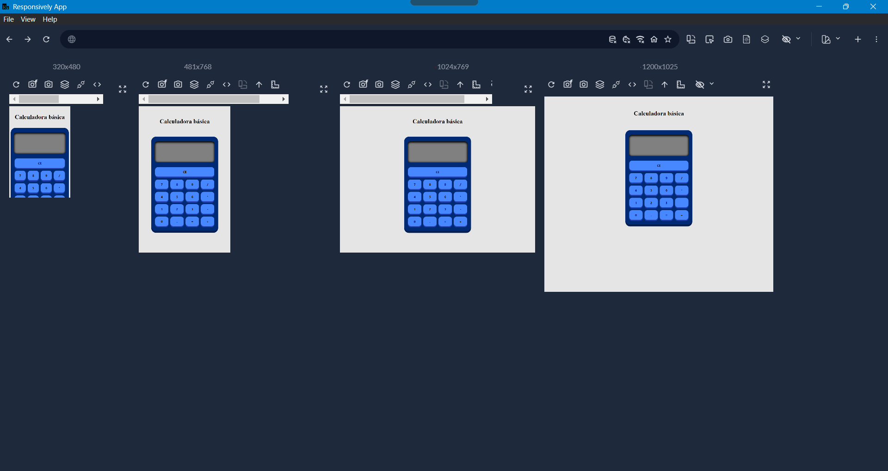

Calculadora Accesible & Responsive
Calculadora lógica desarrollada con Vanilla JS, enfocada en la accesibilidad (A11y) y el diseño elástico para dispositivos móviles.
Especializada en crear interfaces donde la tecnología se adapta a todas las capacidades.
Mi trayectoria en la animación deportiva y mi trabajo con personas con discapacidad me han enseñado que la verdadera magia ocurre cuando eliminamos barreras.
Esa misma pasión por la inclusión es la que me guía hoy en el desarrollo web: me encanta ver cómo el código se transforma de la nada en herramientas que conectan personas. Mi objetivo es construir un mundo digital más accesible, funcional y, sobre todo, humano.

Calculadora lógica desarrollada con Vanilla JS, enfocada en la accesibilidad (A11y) y el diseño elástico para dispositivos móviles.
Mi primer reto construyendo una estructura desde cero. Aquí aprendí a dominar Flexbox para que el diseño sea tan flexible como el deporte.
Lógica y orden. En este proyecto me enfoqué en cómo la interactividad de JavaScript puede hacer que una página cobre vida propia.
¿Tienes un proyecto interesante? Tomémonos un café (virtual) y hablemos de cómo puedo ayudarte.